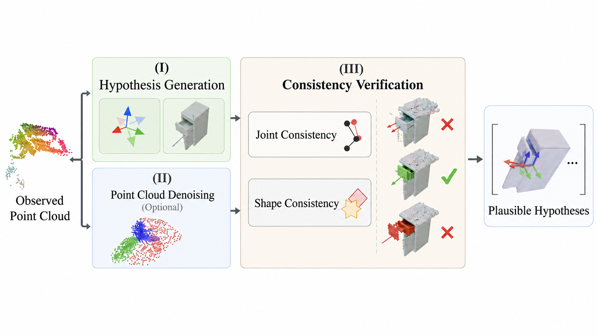
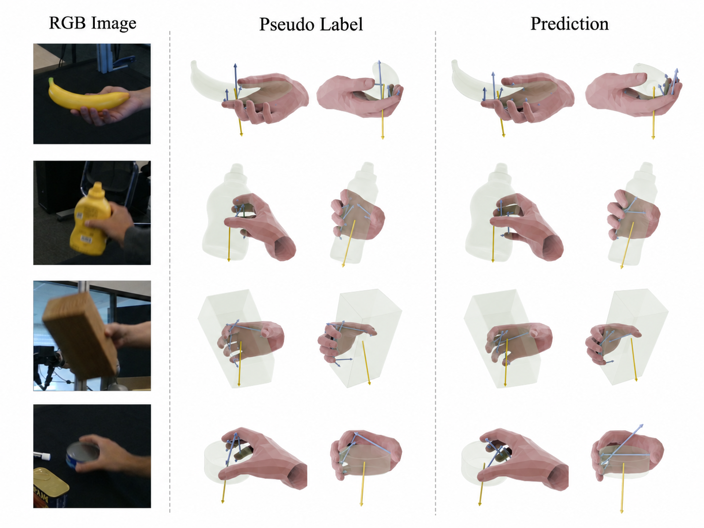

Research record
Publications
A growing list of work in robust computer vision, geometric estimation, and 3D perception.

A multi-reference framework that fuses arbitrary numbers of discontinuous views and introduces the BlurCUG real-world benchmark.

A Hough-voting 2-point RANSAC solver that remains accurate in near-degenerate, high-outlier settings while running up to 100× faster than RANSAC-RP4P at high outlier rates.

A category-level articulated object pose estimator that generates coupled pose-shape hypotheses, denoises partial point clouds, and verifies consistency across joint and shape spaces.

A hand-object pose estimation framework that jointly learns visual and physical cues, then aggregates diffusion-generated candidates for accurate and physically plausible predictions.
More publications will be added as the research record grows.